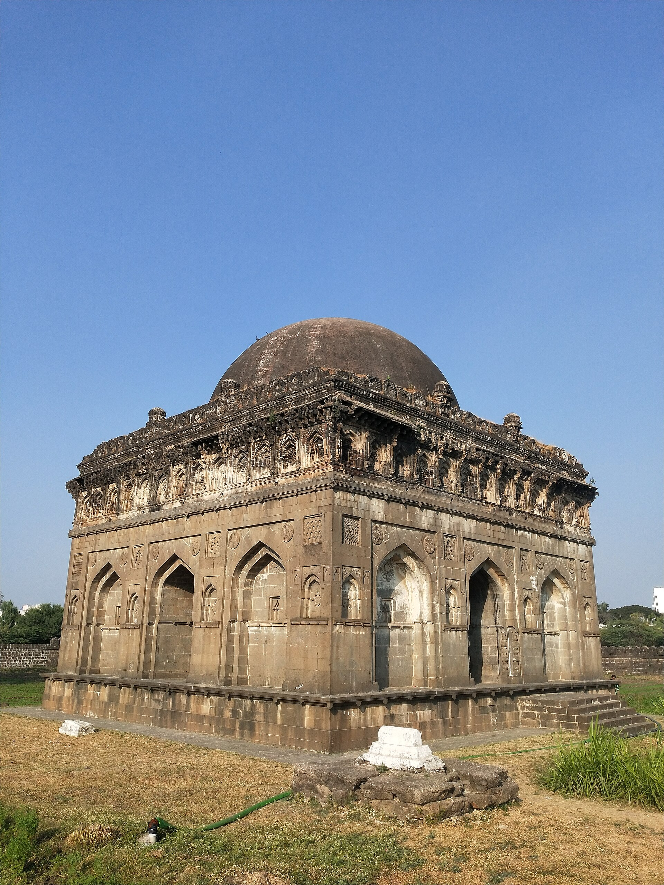
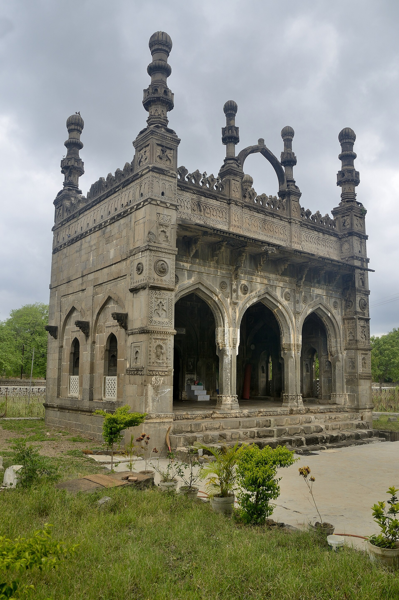
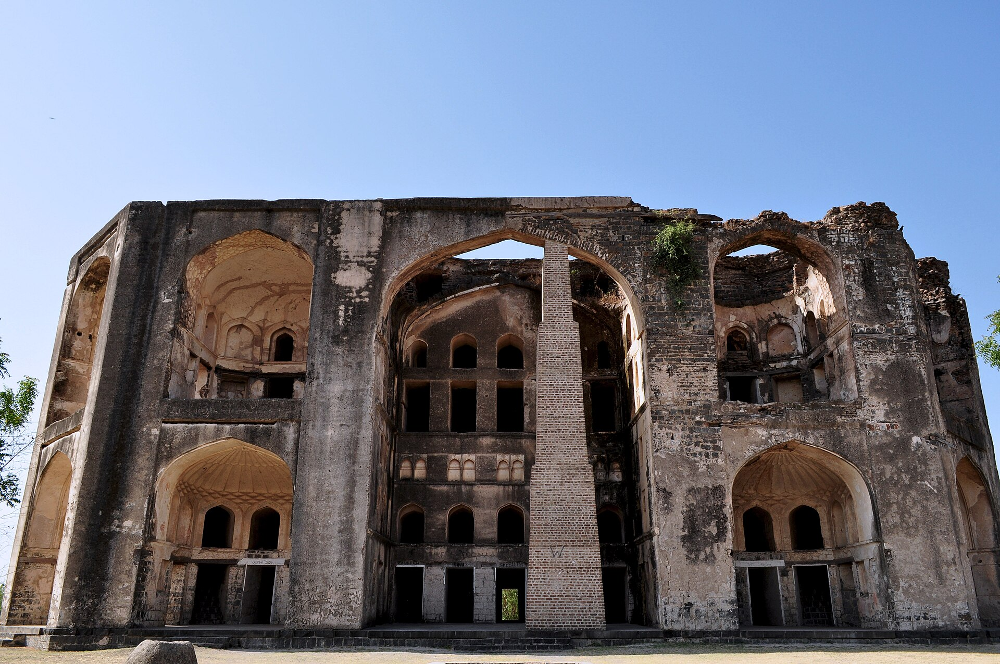
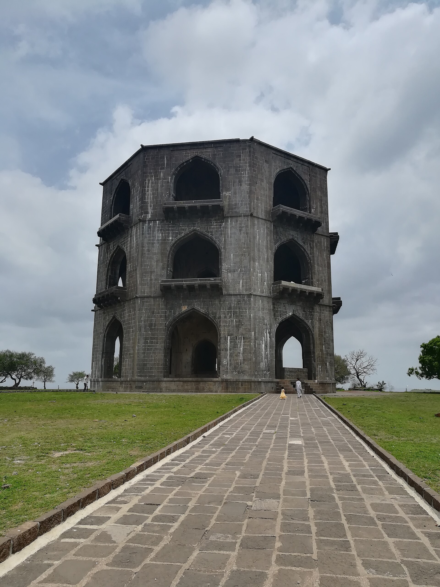

Ahmadnagar Fort
stone 1559–63
An oval of twenty-four bastions, 1.7 km round, walls rising thirty feet from the bottom of a ditch that held nine feet of water. Four years in the building, and it took the Mughals two campaigns and a murder to get in.
9 · The Nizam Shahi capital
Independent 28 May 1490 · annexed 1636
The most Deccani of the sultanates: founded by the son of a captured Brahmin, defended in a breach by a queen in armour, and kept alive for a quarter-century after its own capital fell by an Ethiopian who had been sold as a child.
Malik Hasan Bahri was born Tima Bhat, a Brahmin of Pathri in Marathwada, taken captive by Bahmani forces around 1422 and converted. He rose to command Bahmani armies, won the title Nizam-ul-Mulk, was central to the faction that engineered Mahmud Gawan's judicial murder in 1481, became prime minister and effective ruler — and was killed by one of his own nobles at Bidar in 1486.
His son Malik Ahmad beat the royal army in the field and declared independence on 28 May 1490, ruling first from Junnar and founding the city of Ahmadnagar in 1494.
The descent matters. The Nizam Shahis were structurally the Deccani power, drawing on Marathi-speaking military service families — the Bhosales among them — where Bijapur oscillated between local and foreign-born factions. Everything that later becomes Maratha statecraft has roots in this court.
She was a daughter of Ahmadnagar, queen of Bijapur by marriage, and regent of both kingdoms in turn — one of the very few figures respected across the whole quarrelsome Deccan. She was multilingual, a musician and a painter, and she spent ten years holding Bijapur together for a nephew-by-marriage through vicious factional fighting before returning home.
In November 1595 a Mughal army under Prince Murad invested Ahmadnagar and drove five mines under the walls. The starving garrison dug out two of them before they could fire. When a breach was blown, most of the officers prepared to run. Chand Bibi came to the breach in armour with a drawn sword, her veil wound round her waist as a sash, and held it — and the wall was rebuilt behind her while she stood there. The assaults failed; the Mughals withdrew, saluting her as Chand Sultana. She bought the peace on 23 February 1596 by ceding Berar.
Five years later a second army came. Her own mutinous soldiery, told by a traitor that she meant to sell the city, broke into the palace and killed her. Ahmadnagar fell on 18 August 1600 — the first of the five kingdoms to go.
The handsome three-storey octagonal building on a hilltop thirteen kilometres out that everyone calls Chand Bibi ka Mahal has nothing whatever to do with her. It is the tomb of Salabat Khan II, a minister of this court, with his own and his wife's graves in an octagonal basement under twenty-three metres of building.
The misattribution is old and immovable — a good demonstration of how a strong enough legend simply annexes the nearest impressive ruin. Chand Bibi's own burial place is not securely identified.
The overnight rebuilding of the breach, likewise, is universally repeated and hard to confirm in a scholarly source. The stand in the breach itself is not in doubt.
Colonel Meadows Taylor, the nineteenth-century soldier-novelist who knew the Deccan better than almost any Englishman, put her beside Elizabeth I — an exact contemporary — and thought the comparison flattered neither.
Few in England know, he wrote, that the contemporary of our Queen Elizabeth in the Deccan was a woman of equal ability and equal political talent, who among all the women of India stands out as a jewel without flaw and beyond price.
He was born in Harar in Ethiopia in 1548 and named Chapu. Sold as a child, trafficked through Yemen to Baghdad, he was bought by a merchant who educated him, converted him and renamed him Ambar; brought to the Deccan, he was bought again by the Habshi peshwa of Ahmadnagar and freed on his master's death.
After the capital fell in 1600 he simply did not accept that the kingdom had. He found a Nizam Shahi prince, put him on a throne, and ran the state himself for twenty-six years. By 1610 his army was ten thousand Habshis and forty thousand Deccanis — the Deccani component overwhelmingly Marathi light cavalry.
He beat the Mughals by refusing to meet them. His horse cut supply lines, emptied the country ahead of imperial armies and struck at the rear — bargi-giri, the mode that Shivaji's generation inherited whole, including the families who learned it in his service.
He was as good an administrator as a general. His revenue settlement — land surveyed, classified by fertility, assessed in cash at fixed rates, with lighter assessment on newly reclaimed land — was modelled on Todar Mal's work for Akbar and outlived the sultanate by two centuries. He founded Khadki, later Aurangabad, and built its water supply.
Jahangir could not defeat him and could not stop writing about him: the black-faced, the cursed fellow, the ill-starred. He had his court artist paint an allegory of himself shooting an arrow through Malik Ambar's severed head mounted on a spear, with an owl perched on it — a picture of a wish, not an event. Ambar died in his bed in May 1626, and the state he had held together collapsed within a decade.
Malik Ambar was not a freak of fortune but the peak of a system. East African men — Habshis, Sidis — were brought into the Deccan sultanates as military slaves and, being outsiders with no local kin networks and therefore no local loyalties, were trusted with commands, fortresses and household troops.
Several rose extraordinarily high: ministers, admirals and kingmakers. On the Konkan coast the Sidis of Janjira held an island fortress that neither the Marathas nor the Mughals ever took.
Their descendants remain in Karnataka, Gujarat and Maharashtra today.
After Ambar the state came apart. Shahaji Bhosale — Shivaji's father — backed by Bijapur, extracted a boy prince from Mughal custody and enthroned him at Pemgad in 1633, ruling as regent: the last flicker of Nizam Shahi legitimacy, and a rehearsal of the Maratha state to come. Bijapur made its own peace with the Mughals in 1636 and abandoned the cause. The last Nizam Shah was imprisoned for life at Gwalior.
The fort had a long second life. Aurangzeb died just outside it in 1707. Arthur Wellesley stormed it in 1803. And between 1942 and 1945 its inner buildings held Nehru, Maulana Azad, Vallabhbhai Patel and nine other Congress leaders for nearly three years — Nehru wrote The Discovery of India inside these walls.
Murtaza Nizam Shah I is said to have retired to the water-palace of Farah Bagh to play chess with a singer from Delhi whom he titled Fateh Shah, and to have built him his own pavilion in the garden.
Tradition holds that between the city and Farah Bagh there once stood seventy domes and forty mosques, holding the tombs of royal favourites. Enough of them survive along that road to make the claim feel less like exaggeration than like an inventory.
“Few in England know that the contemporary of our Queen Elizabeth in the Deccan was a woman of equal ability, of equal political talent… who, among all the women of India, stands out as a jewel without flaw and beyond price.”Colonel Meadows Taylor, on Chand Bibi
The fort sits east of the town in its flooded ditch; the royal gardens and the necropolis of favourites run south; and the tomb everyone miscalls Chand Bibi's stands on a hill thirteen kilometres out.
stone 1559–63
An oval of twenty-four bastions, 1.7 km round, walls rising thirty feet from the bottom of a ditch that held nine feet of water. Four years in the building, and it took the Mughals two campaigns and a murder to get in.
1595
Where five Mughal mines were driven under the wall, two were dug out by the garrison, and a queen in armour with her veil wound round her waist stood in the gap that the rest blew open.
16th c., reused
The inner palace block. The last Nizam Shah was held here; so, four centuries later, were Nehru, Azad and Patel for nearly three years — The Discovery of India was written inside it.

early 16th c.
A black stone dome over the founder Ahmad Nizam Shah, with gold Quranic script glittering in the dark interior — the dynasty's first monument and its most restrained.

16th c.
A tiny mosque that is nothing but carving, whose patron is disputed between a court noble and Chand Bibi herself. Small enough to miss and worth more than most of what surrounds it.

c. 1576–83
An octagonal pleasure palace in the middle of a lake that has since vanished, where a sultan retired to play chess with a singer he titled Fateh Shah.
16th c.
Seventy domes and forty mosques, by tradition, strung along the road between the city and Farah Bagh — a necropolis of courtiers rather than kings.

late 16th c.
Three octagonal storeys, twenty-three metres high, on a bare hilltop thirteen kilometres out. Universally called Chand Bibi's palace, and neither her palace nor her tomb.

d. 13 May 1626
The Ethiopian who was sold as a child, freed on his master's death, and then held this kingdom together for twenty-six years after its capital had fallen. He is buried at Khuldabad, off to the north-west near Aurangabad — the city he founded — rather than at the capital he refused to let die.